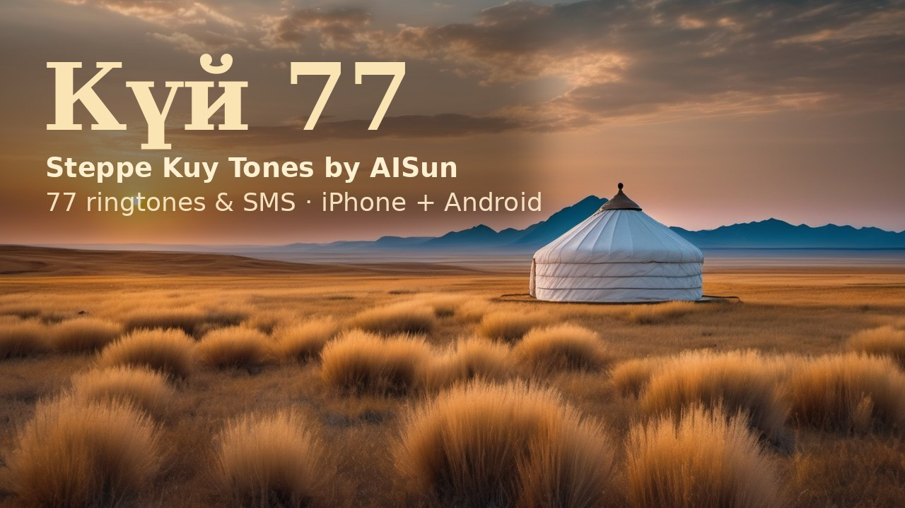

Күй 77
Кюи от AISun
Steppe Kuy Tones by AISun
О наборе — 77 оригинальных мелодий в манере казахского кюя: 53 звонка и 24 SMS. Домбра (төкпе и шертпе), қобыз, сыбызғы и ансамбль. Это не записи и не переложения известных кюев — AISun сочинил их с нуля.
About — 77 original tones in the style of the Kazakh kuy: 53 ringtones and 24 message tones. Dombra (tokpe and shertpe styles), kobyz, sybyzgy flute and ensemble. These are not recordings or arrangements of known kuys — AISun composed them from scratch. The archive has MP3, M4R (iPhone) and OGG (Android) folders, a catalog of all tones and a short guide to setting a ringtone.
Кез келген карта, Қазақстан да / Любая карта, Казахстан тоже / Any card, any country.
Төлегеннен кейін файлдар бірден келеді / Файлы сразу после оплаты / Files right after payment.
Үзінділер 15 секунд / Отрывки по 15 секунд / 15-second previews. Толық қоңырау — 27 с / Полный звонок — 27 с / Full ringtone — 27 s.
Сатып алу / Купить / Buy — $9Қалай алуға болады: батырманы басыңыз, картамен төлеңіз — архив (77 әуен, MP3 · M4R · OGG папкалары) бірден Gumroad-тан жүктеледі және поштаңызға келеді.
Как получить: нажмите кнопку, оплатите картой — архив со всеми 77 мелодиями (папки MP3 · M4R · OGG) скачивается сразу в Gumroad и приходит на почту. Без кодов, чеков и ботов.
How to get it: tap the button, pay by card — download the archive with all 77 tones (MP3 · M4R · OGG folders) right on Gumroad; it also comes to your email. No codes.
Бірінші жинақ / Первый сборник / First pack: Дала үні →
MP3 · M4R (iPhone) · OGG (Android). Музыка оригинальная / Original music: Khamzin Bauyrzhan Galymzhanovich и AISun · ИП SUN / IP SUN, Астана / Astana.